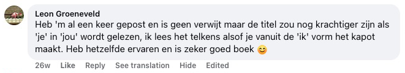
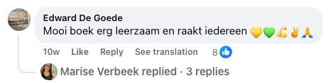
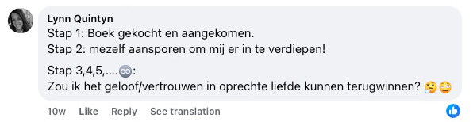
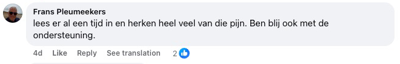
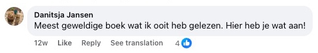
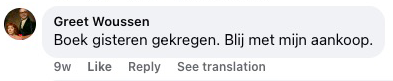
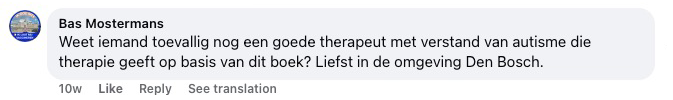
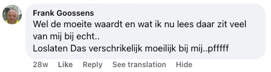
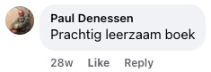

Descubre el método que por fin te ayuda a frenar la avalancha de pensamientos, calmar tus emociones y encontrar la paz interior — sin hábitos autodestructivos ni fingir que todo va bien cuando no es así.
Si te agota aferrarte a un dolor que ya no te aporta nada — un corazón roto que te persigue, una culpa que no consigues soltar o una rabia que no te deja en paz —, este libro te da las herramientas, la claridad y, sobre todo, el alivio que llevas tanto tiempo buscando.

Este libro es para TI si...
Acabas de salir de una ruptura y no puedes dejar de pensar en tu ex
miras sus redes a todas horas esperando un mensaje que nunca llega
Te consume la culpa por algo que hiciste — o que no hiciste
repites en tu cabeza una y otra vez lo que deberías haber dicho, y te castigas cada día
No puedes dormir por la noche porque tu cabeza no para de dar vueltas
te duermes agotada, pero tu mente se niega a apagarse y te despiertas aún más cansada
Sientes rabia o rencor hacia alguien que te hizo daño
y aunque sabes que te está destruyendo, no consigues soltarlo
Cargas con el dolor de una traición que nunca llegaste a procesar
tu pareja, un amigo o tu familia te traicionaron, y esa herida sigue sin cerrar
Te sientes atrapada en el pasado y no consigues avanzar
vives en los recuerdos de lo que fue, en lugar de vivir el presente
Tienes miedo al abandono y haces lo que sea por no perder a nadie
aunque eso signifique perderte a ti misma
Sientes un vacío por dentro y ya no sabes quién eres sin ese dolor
como si tu identidad se hubiera convertido en el sufrimiento que llevas a cuestas
9 razones por las que este libro puede cambiarte la vida
empieza aquí cuando ya estés harta del dolor, de darle vueltas a todo y del caos interior.
- → Soltar un corazón roto — aprende a convertir el dolor de una ruptura o una pérdida en fuerza y paz interior
- → Dejar de darle vueltas a todo — descubre técnicas prácticas para romper el bucle infinito de tu cabeza
- → Perdonar sin olvidar — encuentra el equilibrio entre soltar y protegerte de que vuelvan a hacerte daño
- → Libertad emocional — rompe las cadenas de la rabia, la culpa y el miedo que te tienen atrapada desde hace años
- → Recuperar la confianza en ti — reconstruye tu autoestima después de una etapa de desgaste emocional
- → Poner límites sanos — aprende a decir «no» sin sentirte culpable y protege tu paz interior
- → Sanar el pasado — deja de vivir en los recuerdos y empieza a construir tu futuro
- → Dormir mejor — calma tu mente antes de acostarte y despierta descansada en lugar de agotada
- → Un nuevo comienzo — descubre cómo convertir tu dolor en tu mejor maestro y construir una vida de la que te sientas orgullosa

📋 Especificaciones del producto
| Título | Suelta lo que te destruye |
| Autor | Joris de Vries |
| Páginas | 320 páginas |
| Incluye | Cuaderno de ejercicios prácticos |
| Idioma | Español |
| Formato | Tapa blanda |
| Precio | 36 € (IVA incluido) |
| Envío | Gratuito a toda España |
| Garantía | Devolución de 30 días |
Este libro puede ser justo eso que te faltaba hasta ahora 💫
Puede que ya lo hayas intentado de mil maneras. Libros que sonaban bonitos pero nunca llegaban de verdad al fondo. Métodos terapéuticos que prometían alivio y en la práctica no cambiaban nada. Y aun así estás aquí — porque por dentro sabes que todavía hay esperanza. Que la paz interior es posible. Que el dolor que llevas contigo no tiene por qué quedarse para siempre.
📘 Suelta lo que te destruye no es un libro más para la estantería. Es una guía práctica de Joris de Vries, escrita desde su propia experiencia con el pensamiento obsesivo, la culpa, el miedo y el caos interior. Este libro te ayuda a:
- dejar de castigarte por el pasado,
- romper la espiral de pensamientos negativos,
- y volver a confiar en ti y en tu camino.
Y todo con un lenguaje claro y humano — sin un solo cliché.
💛 Y eso no es todo lo que te llevas hoy:
- Un libro (320 páginas) lleno de herramientas prácticas que funcionan de verdad
- Un cuaderno de ejercicios al final del libro para llevar la teoría a la práctica
- 2 e-books de regalo (otras 200 páginas extra) — material para profundizar en tus relaciones y tu claridad mental
- Envío gratuito valorado en 6 €
- Garantía de devolución de 30 días — sin preguntas, sin riesgo
✨ Da hoy el primer paso.
Haz clic en el botón de abajo y pide tu ejemplar hoy mismo. No porque «tengas que hacerlo», sino porque mereces sentirte bien. Sin culpa. Sin máscaras. Y por fin — a tu propio ritmo 🌱
MONEY
BACK
Garantía de devolución ampliada
30 días en lugar de 14 — ¿el libro no te convence? Tienes 30 días completos para devolverlo y recuperar tu dinero.
📖 Lee un fragmento del libro. Combina teoría con un cuaderno de ejercicios que se adapta a lo que tú necesitas 🎯


Si estás cansada de pelear contigo misma…
Si por las noches te persigue lo que dijiste, lo que no dijiste, lo que perdiste o lo que estropeaste…
Si todavía esperas que quizá se arregle, o que algún día se pase solo — pero sigues atrapada en tu cabeza y nada cambia…
Entonces este es el libro más importante que vas a abrir en tu vida.
Y te cuento por qué:
Los pensamientos no paraban de girar en mi cabeza — como un bucle infinito que nunca se detiene.
«¿Y si aquel día lo hubiera dicho de otra manera?»
«Quizá seguiríamos juntos.»
«Todo es culpa mía.»
Cada día era como un guion que se repite — miedo, recuerdos, reproducir una y otra vez cada conversación, cada silencio. ¿Y en casa?
Vacío. No físico — por dentro.
Estaba rodeado de cosas que me recordaban lo que había perdido. Y que quizá nunca debí soltar. Lo intenté todo: terapias, afirmaciones, meditación, convencerme a mí mismo de que estaba bien…
Pero nada llegaba de verdad al fondo. Nada funcionaba. Solo otro día más… el mismo dolor… las mismas preguntas.
«¿Por qué no consigo avanzar?»
«¿Qué me pasa?»
«¿Por qué sigo esperando?»
Sentía que me estaba perdiendo a mí mismo.
Y empecé a dudar de si algún día volvería a encontrar la paz interior.

Cada día sin este libro es un día más encerrada en tu propia cabeza.
¿Cuántas horas has perdido ya reproduciendo lo que pasó? — «Si aquel día lo hubiera hecho de otra manera…»
¿Cuántas veces has deseado que el dolor parara de una vez?
¿Que por fin hubiera silencio ahí dentro?
¿Cuánto tiempo más piensas seguir así, dándole vueltas a lo mismo?
Y cada día que lo aplazas es un día más atascada en un dolor viejo.
Un día me dije: «¡Basta!»
Estaba harto de vivir a la sombra del dolor, la culpa y el caos interior.
Empecé a buscar respuestas — y justo eso me llevó a descubrimientos que cambiaron mi vida para siempre.
Gracias a estos principios dejé de ser un prisionero de mis propias emociones.
Y en lugar de una guerra interior, por fin encontré la calma que llevaba años buscando. ¿Y qué pasó entonces?
La gente a mi alrededor empezó a notar el cambio.
Me preguntaban:
«¿Cómo lo has conseguido?»
Así que empecé a compartir lo que funciona de verdad. Sin teorías. Sin palabras vacías. Solo lo que ayuda en momentos reales de dolor, pérdida, culpa y rabia.
El resultado es este libro. Un libro que no va solo de «soltar», sino de volver a encontrarte.
De sanar. Y de dejar de hacerte daño. Da igual si sufres por una ruptura reciente, una traición antigua o años de culpa sin procesar — hacia ti misma o hacia otra persona.
Este libro te enseña a encontrar el camino de vuelta a ti.
A tu manera.
Sin máscaras.
Sin presión.
Sin vergüenza.
¿Y sabes qué?
No soy el único al que esto le funcionó.
Historias suyas y también la mía. Personas que llevaban años sin poder soltar su dolor empezaron de pronto a respirar libres otra vez.
Quienes estaban hundidos en la culpa volvieron a mirarse al espejo sin vergüenza por primera vez.
Y quienes se sentían completamente perdidos encontraron el camino de vuelta a sí mismos.
Y fíjate — este enfoque funciona tan bien porque toca de verdad lo que nos ata por dentro.
Desde la parálisis interior hasta los estallidos de rabia. Desde la soledad hasta vivir con una máscara puesta.
Desde no poder perdonar hasta el odio hacia una misma. Cada paso de este libro está construido con cuidado para llevarte a un alivio real — no a una inspiración que se evapora en unos días.
¿Y los resultados?
Justo lo que todos anhelamos: alivio, calma y la sensación de estar por fin en casa — en tu cuerpo, en tu cabeza y en tu corazón.
¿Y sabes qué más?
Podría escribir otro libro entero solo con las historias de personas cuya vida cambió por completo gracias a este enfoque.
Porque he compartido estos métodos con personas de todas las edades, de situaciones de vida muy distintas y con dolores interiores de todo tipo. Desde quien acababa de pasar por una ruptura reciente…
Hasta quien llevaba 20 años tragándose la rabia. Desde personas con ansiedad que temían incluso el momento de despertarse…
Hasta quien ya no sentía absolutamente nada por dentro. ¿Y el resultado? Un alivio que ni siquiera se habían atrevido a imaginar.
Silencio interior donde toda la vida hubo gritos.
Una respiración sin dolor. Y espacio — para comienzos nuevos y amables.
Incluso algunos «expertos» me preguntaron:
¿Esto funciona de verdad?
¿No es un poquito demasiado simple?
Pues…
enseguida volvemos a eso. Pero antes — veamos más pruebas de que este camino funciona de verdad.

📚 Lectores de toda Europa encontraron calma con este libro — empezaron igual que tú: cansados, saturados, pero listos para cambiar ✨
Como si alguien hubiera agitado una varita mágica…
Cuanto más escuchaba a lectores que lidiaban con el dolor, la pérdida o una lucha interior, más claro lo tenía: estos principios funcionan en todas partes.
Sentía que este enfoque era distinto — aunque al principio no sabía exactamente por qué. Así que fui más al fondo. Y empecé a ver patrones.
Diálogos interiores que se repetían, mecanismos de defensa que volvían una y otra vez.
Probé. Observé. Reflexioné. Y paso a paso construí un método que no ataca solo los síntomas, sino la causa. ¿Y los resultados?
Personas que creían que nunca cambiarían sintieron de pronto un alivio sincero.
Quienes creían que «yo soy así y punto» volvieron a crecer.
Y quien se sentía completamente perdido recuperó su brújula.
Desde entonces he aplicado este método a casi todos los dolores que más nos tocan:
- Culpa y vergüenza: aprende a perdonarte y a dejar de castigarte por los errores del pasado. En su lugar, vuelve a sentir ligereza y valor propio.
- Rabia y rencor: tendrás herramientas para soltar heridas antiguas y dejar de pelear en tu cabeza con quienes te hicieron daño. No para «ajustar cuentas», sino con la seguridad de que ya no te controlan.
- Sensación de soledad: aprende a crear seguridad dentro de ti, incluso cuando no hay nadie cerca que te entienda. Descubrirás que estar sola no es lo mismo que estar vacía.
- Pensamiento en bucle: dejas de repetir los «¿y si…?» y aprendes a frenar la espiral de pensamientos antes de que te trague. Tu mente vuelve a ser un lugar de calma, no una zona de miedo.
- Miedo a la pérdida o al abandono: descubre cómo manejar ese miedo profundo a perder a alguien — sin renunciar a tu necesidad de cercanía ni a tu valor propio.
- Vivir anclada en el pasado: aprende a dejar de vivir en lo que fue — y da por fin tu primer paso real hacia delante. No un simple «déjalo estar», sino sanar de verdad desde dentro.
Y funciona en cualquier situación en la que intentes soltar algo que te ata por dentro.
Tú puedes aplicar estos principios a tu propia vida — y empezar por fin a vivir con ligereza, calma y la confianza de que puedes con esto.
Esto no es teoría. Ni palabrería espiritual.
Es un sistema práctico que ayuda a lectores de toda Europa a manejar la culpa, la tristeza, el miedo, la rabia y el estancamiento.
Cada herramienta de este libro nace de la experiencia personal — de años de búsqueda, historias reales, caídas y vueltas a empezar.
Y justo por eso decidí compartir lo que aprendí. Para que tú no tengas que pasar por el mismo dolor que yo.
Esas noches interminables en las que te rompes bajo tus propios pensamientos. Esa sensación agotadora de intentarlo todo… y que nada funcione.
Esa desesperación silenciosa en la que piensas:
«Quizá esto ya no se me pase nunca.»
Pero no tienes por qué quedarte ahí.
Este libro te enseña que hay otro camino — y que está más cerca de lo que crees.
Y entiendo que todavía tengas dudas. Tranquila — enseguida te cuento el «secreto» de por qué comparto todo esto… y por qué no cuesta cientos de euros.
Pero antes — echemos un vistazo a…
🇳🇱🇧🇪 Lectores de Países Bajos y Bélgica
se encontraron a sí mismos en este libro.
Comprenderlo es el principio de la sanación 💡
📌 Reseñas oficiales de Países Bajos — sin una sola palabra inventada.
Las reseñas que ves abajo son publicaciones y comentarios reales de Facebook de los países donde el libro se publicó primero y donde ya lo han leído miles de lectores — por eso están en neerlandés.
No queríamos mentir. No queríamos inventar reseñas falsas ni maquillar nada para que pareciera más convincente.
Por eso decidimos conscientemente publicar las reseñas exactamente tal como las escribieron los propios lectores — en su idioma original, sin traducirlas, retocarlas ni cambiar una sola palabra. Así tienes la certeza de que lees palabras reales de lectores reales.
El libro en sí está completamente traducido al español — con rigor, buena gramática y sensibilidad por el idioma.
📖 Consejo: para leer las capturas en español, usa la función de traducción de tu navegador.
Lo que escriben los lectores — traducido al español
Desliza las reseñas a izquierda y derecha. Debajo de cada traducción encontrarás el comentario original de Facebook, para que puedas comprobar su autenticidad tú mismo.




















¿Quién es el autor de este libro?

Me llamo Joris de Vries. Y este libro no lo escribí desde una torre de marfil, sino desde el pozo más profundo de mi vida.
Hace quince años perdí todo lo que conocía.
Mi relación se derrumbó. Mi confianza desapareció. Pasaba las noches en vela, atrapado en bucles de pensamientos sin fin. La culpa me devoraba por dentro. Ya no sabía quién era ni para qué levantarme por las mañanas.
Lo intenté todo. Libros de autoayuda, pódcasts, apps de meditación, charlas con amigos. Nada llegaba al fondo.
Hasta que entendí que la respuesta tenía que encontrarla yo.
Empecé a leer. No un libro — cientos. Sobre neurociencia, filosofía, psicología. Viajé, hablé con personas que habían pasado por lo mismo y poco a poco fui encajando las piezas.
Me llevó años. Años de caer y levantarme. De recaídas y avances. De dudas y, al final — liberación.
- Pasé por los valles más profundos — y encontré el camino de vuelta
- Años de estudio por mi cuenta: neurociencia, filosofía y comportamiento
- Desarrollé un método propio que nos ayudó a mí y a muchos más
- Todo lo que aprendí está resumido en este libro — para que tú no tengas que dar el mismo rodeo
Lo que descubrí me cambió la vida:
La mayoría de la gente no sufre por lo que le pasó — sufre por lo que piensa sobre lo que le pasó.
Esa idea se convirtió en la base de este libro.
Una combinación de:
- Neurociencia (cómo te sabotea tu propio cerebro)
- Filosofía oriental (el arte de soltar)
- Ejercicios prácticos (pasos concretos que funcionan desde el primer día)
📖 Los lectores de Suelta lo que te destruye notan un cambio real ya en las primeras semanas — más calma, claridad y alivio emocional 🌟

Puede que este no sea el primer libro que lees 📖
Y puede que justo por eso sea el último que necesites de verdad.
Puede que ya lo hayas intentado todo.
Consejos que sonaban bien, pero no cambiaban nada.
Métodos que funcionaban… hasta la siguiente recaída.
Y aun así estás aquí. Y eso significa algo. Significa que todavía no has perdido la fe.
Que por dentro sigues sabiendo que el alivio es posible. Que la calma no es un sueño, sino una habilidad. Y que tu dolor no tiene por qué acompañarte para siempre.
📚 Suelta lo que te destruye no es una tirita — es un mapa. Un mapa de vuelta a ti.
En este libro, Joris de Vries comparte pasos claros, eficaces y humanos que le ayudaron a él y a muchos más a:
- soltar la culpa y el autocastigo,
- romper el círculo de rumiaciones y voces interiores,
- y volver a confiar — en sí mismos, en la vida y en los demás.
No esperes rollos espirituales etéreos. Ni psicología dura sin compasión. Espera autenticidad. Franqueza. Y alivio.
✨ El primer paso es pequeño. Pero puede cambiarlo todo.
No necesitas tenerlo todo resuelto para empezar. No necesitas ser fuerte — solo estar abierta a la idea de que las cosas pueden ser distintas.
👉 Haz clic en el botón y empieza a leer.
Puede que aquí encuentres esa calma que llevas tanto tiempo buscando.
Envío gratuito
Valorado en 6 € — los gastos de envío los pagamos nosotros. Tú pagas solo el libro; del resto nos encargamos.
🎁 Los bonus de abajo solo están disponibles hoy con tu pedido de Suelta lo que te destruye — ¡no dejes escapar esta oportunidad única! ⏰

🎁 BONUS #1: E-book «El antídoto contra darle vueltas a todo»
Este e-book exclusivo te lo llevas gratis si haces tu pedido hoy. Contiene herramientas y ejercicios prácticos que encajan perfectamente con el libro principal.
- Hojas de trabajo extra para conocerte más a fondo
- Ejercicios diarios para llevar la teoría a la práctica
- Ideas exclusivas que no encontrarás en ningún otro sitio
- Descarga inmediata tras tu pedido

🎁 BONUS #2: E-book «Amor sin tonterías»
La verdad sobre las relaciones de la que nadie se atreve a hablar. Deja de complacer a todo el mundo. Deja de perderte en una relación que te agota, te duele y te rompe poco a poco. Recupera tu fuerza, tu claridad y tu capacidad de elegir lo que tú quieres — no lo que otros esperan de ti.
No es una guía amable sobre comunicación. Este libro es una confrontación contigo misma. Por qué estás donde estás. Y qué tienes que hacer para salir de ahí.
¿Sientes que algo no encaja en tu relación? ¿Dudas de si el problema eres tú — o la otra persona? ¿Has perdido la conexión, la atracción o a ti misma? Este libro rompe tus ilusiones. Y te ayuda a levantarte de nuevo.
- Descubre tus patrones de autodestrucción y aprende a manejarlos
- Toma el control de tus emociones, tus miedos y tus reacciones
- Entiende qué significa el compromiso de verdad — y cuándo toca marcharse
- Asume toda la responsabilidad y construye una relación que funcione de verdad
- No esperes a que cambie la otra persona. Cambia tú — y todo cambia contigo
Puede que ahora te preguntes: «¿Por qué gastarme dinero en este libro?» 🤔📘 La respuesta es simple:
Tienes 30 días para probarlo — ¿no te convence? Te devolvemos el dinero.
Sin preguntas, sin complicaciones. Aunque los dos sabemos que no lo vas a devolver. Porque en cuanto empieces a leer, sentirás que este libro puede cambiarte la vida.
Lo que hace diferente a este libro:
- Aplicación práctica — este libro no te da solo ideas, sino pasos concretos que puedes aplicar desde hoy en tu día a día.
- Basado en experiencia — los métodos nacen de la experiencia personal y años de estudio, así que sabes que aprendes herramientas honestas y probadas.
- Sanación profunda — a diferencia de otros libros, este va al núcleo de tu carga emocional, no solo a los síntomas superficiales.
- Conexión emocional — está escrito con empatía y comprensión, para que te sientas escuchada y acompañada en tu camino hacia la paz interior.
- Perspectivas únicas — te enseña a mirarte a ti y a tus emociones de una forma que no habías probado — sin recetas recicladas de otros libros.
Un libro que lees a tu propio ritmo
Sin prisas, sin presión. Empieza cuando estés lista y tómate el tiempo que necesites.
Herramientas prácticas para el día a día
Con ejercicios concretos y un cuaderno de trabajo puedes empezar hoy mismo — paso a paso, a tu ritmo.
Mereces ser libre
Soltar no es debilidad — es fuerza. Este libro te ayuda a hacer sitio para lo que de verdad te hace feliz.
📦✨ ¿Lista para empezar? Haz tu pedido hoy y recibe el pack completo en casa 📘🙏
Tu camino hacia la paz interior empieza aquí.
📘 Recibes este pack completo por solo 36 € — menos que una cena para dos o un depósito de gasolina.
Pero a diferencia de esas cosas, este libro te da valor para toda la vida. 💎💚
Te ayuda a encontrar la paz interior, a soltar un dolor que llevas años cargando y a volver a sentirte en casa dentro de ti. ❤️
Con esta pequeña inversión tienes herramientas prácticas que podrás usar durante años — cuando las necesites, a tu ritmo. 💶🌱
❓ Preguntas que nos hacen a menudo 💬
¿Funciona de verdad? ¿No es otro libro de autoayuda vacío?
Entiendo perfectamente tu duda. «Suelta lo que te destruye» no es el típico libro de autoayuda lleno de consejos vagos y frases bonitas. Se basa en la experiencia personal y en años de estudio de neurociencia, filosofía y comportamiento. Joris de Vries desarrolló estas técnicas después de tocar fondo él mismo y encontrar el camino de vuelta. La diferencia está en los pasos prácticos y concretos que funcionan de verdad — incluso cuando estás en tu peor momento. Y con nuestra garantía de devolución de 30 días no corres ningún riesgo.
Ya he probado mil cosas, ¿por qué esto iba a ser diferente?
Es normal que seas escéptica — frustra mucho invertir tiempo y esperanza en métodos que al final no cambian nada. Lo que hace diferente a este libro es su enfoque directo y práctico, basado en experiencia personal y no en teoría seca. Nació de la historia real de un autor que también lo había «probado todo» y que al final encontró alivio gracias a su propio método. A diferencia de los consejos genéricos, aquí tienes técnicas concretas que funcionan incluso en los momentos en que estás agotada. Y si aun así el libro no funciona para ti, puedes probarlo sin riesgo gracias a la garantía de devolución de 30 días.
¿Y si a mí no me funciona? Mi situación es distinta, más complicada.
Cada persona es única y carga con su propia historia. Justo por eso «Suelta lo que te destruye» está pensado para ofrecer enfoques flexibles que se adaptan a situaciones y niveles de complejidad muy distintos — desde rupturas recientes hasta dolores sin procesar de hace años. El cuaderno de ejercicios te permite aplicar los métodos a tus circunstancias concretas. Lectores con historias de lo más variadas — desde duelos hasta culpa, desde rabia hasta inquietud constante — ya han encontrado ayuda en este libro. Y no lo olvides: tienes garantía de devolución de 30 días sin preguntas incómodas.
¿No son 36 € demasiado para un libro?
Recibes un pack completo — no solo un libro de 320 páginas con cuaderno de ejercicios, sino también dos valiosos e-books de regalo con 200 páginas extra en total («El antídoto contra darle vueltas a todo» y «Amor sin tonterías»), más el envío gratuito valorado en 6 €. Muchos lectores nos han contado que una sola idea del libro les ahorró muchísimo tiempo y energía. Por el precio de una salida nocturna tienes herramientas que podrás usar durante años. Y con la garantía de devolución de 30 días no corres ningún riesgo.
¿No sería mejor invertir en un terapeuta que en un libro?
La terapia y este libro no se excluyen en absoluto — al contrario, se refuerzan. Mucha gente usa este libro como primer paso en su camino, o como complemento de la terapia para entenderse mejor y practicar entre sesiones. Por una fracción de lo que cuestan unas pocas sesiones tienes herramientas que puedes usar cuando las necesites — en mitad de la noche, en la intimidad de tu casa, a tu ritmo. Puedes empezar hoy mismo, sin listas de espera. Y si más adelante necesitas acompañamiento profesional, este libro te da una base sólida para aprovechar la terapia mucho mejor.
¿Quién es Joris de Vries? ¿Puedo fiarme de él?
Joris de Vries es un autor que pasó por un pozo personal muy profundo — y salió de él más fuerte. Tras años de estudio de neurociencia, filosofía y comportamiento, desarrolló un método práctico que le ayudó a soltar lo que le estaba destruyendo. Los métodos de este libro no son teóricos — nacen de experiencia personal real. Su enfoque combina ideas de varias disciplinas, traducidas a técnicas accesibles que cualquiera puede aplicar. Puedes probar su método sin riesgo gracias a la garantía completa de devolución de 30 días.
¿Por qué este libro no está en Amazon o en las librerías?
Hemos elegido conscientemente la venta directa para poder ofrecerte la mejor experiencia. Eso nos permite añadir bonus valiosos (dos e-books extra valorados en más de 30 €), ofrecer envío gratuito y darte una garantía personal de devolución de 30 días — cosas imposibles en las grandes plataformas, que se llevan un 40–60 % de comisión. Además, así podemos darte atención directa y responder rápido a tus dudas. Tú recibes más valor por tu dinero, y nosotros podemos construir una relación directa contigo.
¿El libro también está disponible en versión digital?
De momento el libro se vende en su edición física en papel — que además incluye el cuaderno de ejercicios listo para escribir directamente en él. Con tu pedido recibes también dos e-books de regalo en PDF, que puedes leer en cualquier dispositivo: ordenador, tablet o móvil. Así empiezas a leer el material digital al momento mientras el libro va de camino a tu casa.
¿Cuánto tarda en llegar el libro?
Tu libro llega en unos 5 días laborables desde que haces el pedido. Solemos enviarlo en 24–48 horas, y el envío es totalmente gratuito — los gastos de envío y embalaje están incluidos en el precio. Cuando salga el paquete recibirás un correo de confirmación con los datos de seguimiento. Si por cualquier motivo la entrega tardara más, escríbenos sin problema a hola@sueltaloquetedestruye.es y lo revisamos al momento. Y mientras esperas, ya puedes empezar con los dos e-books de regalo que recibes por correo.
¿Para quién es este libro? ¿Encaja con mi situación?
Este libro es para cualquiera que cargue con un peso emocional — ya sea el dolor de una ruptura, una culpa que te persigue, una rabia que no consigues soltar, el pensamiento en bucle, el miedo al abandono o la sensación de estar completamente perdida. Está escrito para personas en situaciones de vida muy distintas: desde quien acaba de vivir una pérdida hasta quien lleva años con un dolor sin resolver. Está redactado a propósito sin jerga técnica, para que sea accesible para todo el mundo. Y gracias al cuaderno de ejercicios puedes adaptar los métodos a lo que tú necesitas.
¿La garantía de devolución de 30 días es de verdad sin complicaciones?
Totalmente. Si en 30 días no notas mejoría o no estás satisfecha por el motivo que sea, te devolvemos el importe completo. Solo tienes que devolvernos el libro en perfecto estado, y en cuanto lo recibamos tramitamos tu reembolso al momento. Sin formularios complicados, sin preguntas incómodas sobre por qué no funcionó, sin líos. Escríbenos a hola@sueltaloquetedestruye.es y lo gestionamos todo por ti. Lo hacemos porque confiamos plenamente en el valor de este libro, y queremos que lo pruebes sin preocupaciones. Tu satisfacción y tu bienestar importan más que la venta.
¿Cómo sé si este libro me va a ayudar de verdad?
Cada persona es diferente y no podemos prometerte resultados concretos. Lo que sí podemos decirte: el libro ofrece ejercicios concretos y un cuaderno de trabajo con el que puedes empezar hoy mismo. Los lectores nos cuentan a menudo que el enfoque práctico les ayudó de verdad. Puedes leer las reseñas de esta página para hacerte una idea. Y lo más importante: con la garantía de devolución de 30 días no corres ningún riesgo. ¿No te funciona? Te devolvemos el dinero.
¿Mi pago es seguro? ¿Puedo confiar en esta empresa?
Tu pago está completamente protegido. Lo procesan servicios de confianza como PayPal, Klarna y Revolut, que garantizan que el pago sea seguro, rápido y justo para ambas partes. Usamos proveedores de pago que cumplen los estándares de seguridad más exigentes (cifrado SSL y conformidad PCI-DSS). Nosotros nunca guardamos tus datos financieros — todo lo procesa directamente y de forma segura el proveedor de pago. Somos una empresa registrada (Performance Marketing Solution s.r.o., n.º de registro 06259928) con términos y condiciones y política de privacidad transparentes. Además, tienes atención al cliente completa en hola@sueltaloquetedestruye.es. Y recuerda: con la garantía de devolución de 30 días no corres ningún riesgo económico.